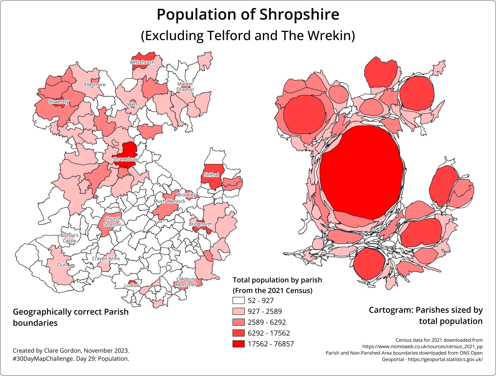

Population
Shropshire population from the 2021 census

Data
What have I learnt?
- Useful opportunity to explore 2021 census data.
- Explored ways of displaying the data, such as pie charts for each parish. That didn’t really work because there were too many variables, and the parishes are fairly small.
- How to make a cartogram in QGIS.
Process
- Import boundaries and use
Select Within plugin to select only Parishes and Non-civil Parished areas within the Shropshire boundary and export to a new layer.
- In Excel:
- Removed parishes with no data.
- Created columns with percentages of total for each method of travel.
- Import csv table to QGIS as delimited text with no geometry.
- Check numerical fields have come through as correct data types, which they did this way.
Join the csv table to the parish boundaries via Properties.Export resulting layer and save so it becomes permanent.- Can now use percentage fields to style map as
Graduated.
- Alternatively style from the total population field.
Creating a cartogram
Trying out a cartogram for total populations of parishes in Shropshire.
- In QGIS install
Cartogram3 plugin.
Vector > Cartogram > Compute Cartogram- Easy to fill in:
- select input layer and field with total population.
- Set max. number of iterations. Does work with default.
- Creates a temporary layer, so if you’re happy with it, make permanent.
Styling should be same as original layer, which is useful.
Creating map layout.
- Set up layout with population map showing geographic outlines, and cartogram. Same legend applies to both.
- Export to image.